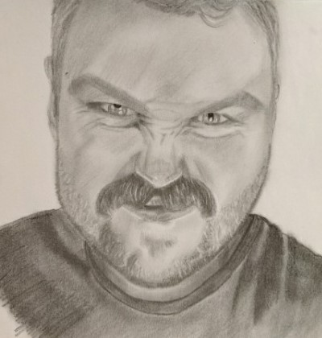

Benjamin Monk s3864364@student.rmit.edu.au
My name is Ben, I am 28 years old and I have a wife and two children (3 and 3 months).
I currently reside on my family's property on the Fleurieu Peninsula in South Australia, this is after moving around a bit, including living in Queensland for just over a year.
Aside from various short courses and vocational training, my highest level of education is in fact SACE stage 1 (year 11). This is due to a rebellious side of me refusing to gain the final points needed to get to 200 credits, as I believed I would never want to gain higher education.
Despite this, I have decided to pursue some higher education as I can already feel the effects of all the manual labor on my body as I have worked in several jobs including farm work, and have now been self employed as a plasterer for several years.
I was not planning on including an actual picture of myself here, but my wife just finished this drawing she did of me, and I quite liked it.
